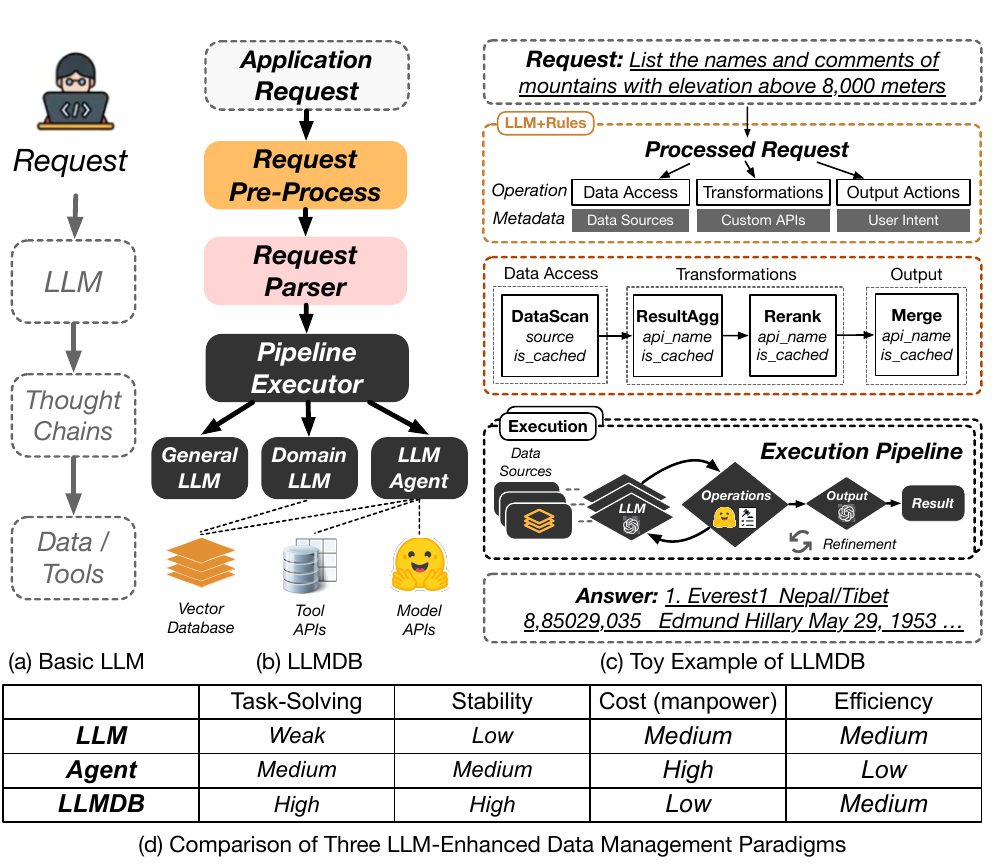

<!-- Slide 4 — Notre proposition : LLMDB -->
<div class="slide">
    <div class="slide-content">
        <h2>LLMDB — Un framework LLM-enhanced pour la gestion de données</h2>
        <div class="two-col">
            <div>
                <style>.slide-04-table td, .slide-04-table th { padding-top: 1.4rem !important; padding-bottom: 1.4rem !important; }</style>
                <div class="table-glass">
                    <table class="slide-04-table">
                        <thead>
                            <tr><th></th><th>LLM seul</th><th>Agent LLM</th><th>LLMDB</th></tr>
                        </thead>
                        <tbody>
                            <tr><td>Task-Solving</td><td>Moyen</td><td>Moyen</td><td><span class="badge-green">Élevé</span></td></tr>
                            <tr><td>Stabilité</td><td><span class="badge-red">Bas</span></td><td>Moyen</td><td><span class="badge-green">Élevé</span></td></tr>
                            <tr><td>Coût</td><td><span class="badge-red">Élevé</span></td><td><span class="badge-red">Élevé</span></td><td><span class="badge-green">Bas</span></td></tr>
                            <tr><td>Efficacité</td><td>Moyen</td><td><span class="badge-red">Bas</span></td><td>Moyen</td></tr>
                        </tbody>
                    </table>
                </div>
            </div>
            <div style="display:flex;flex-direction:column;gap:1.2rem;">
                <figure class="figure-box fragment" data-fragment-index="1" onclick="openLightbox(this)" style="margin:0;">
                    
                    <figcaption>Comparaison : (a) LLM seul · (b) Agent LLM · (c) LLMDB<span class="zoom-hint">↗ zoom</span></figcaption>
                </figure>
                <div class="callout-info fragment" data-fragment-index="2" style="font-size:0.82rem;">
                    LLMDB intègre un <strong>Domain LLM</strong>, une <strong>Vector DB</strong> et un <strong>Pipeline Agent</strong> pour dépasser les limites des approches précédentes.
                </div>
            </div>
        </div>
    </div>
</div>
